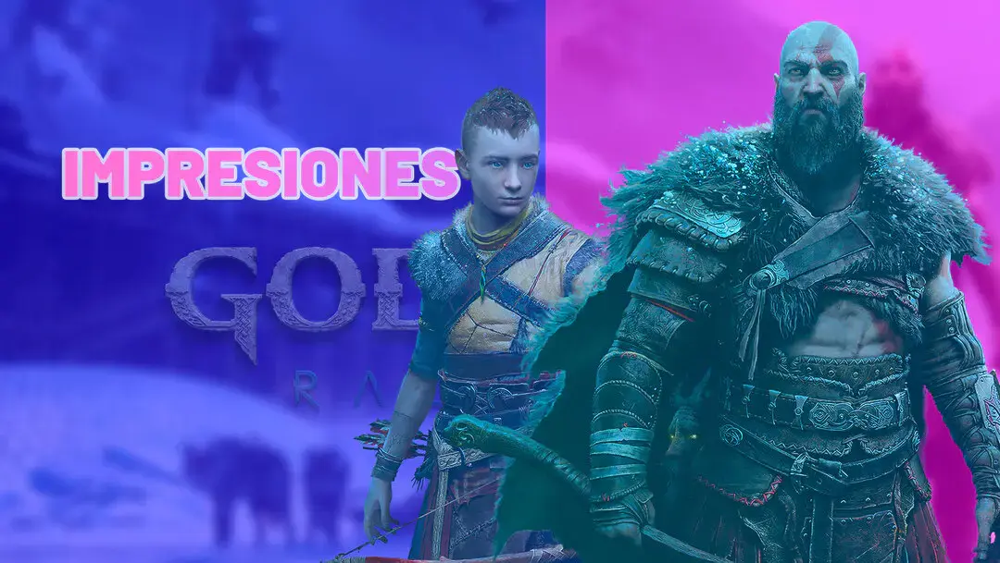
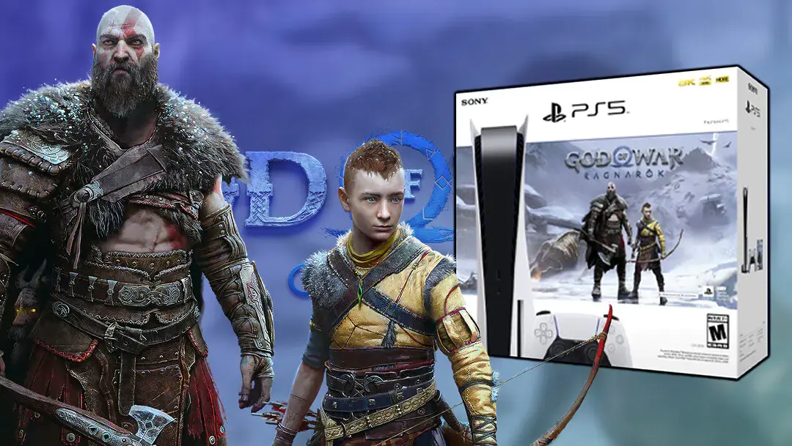
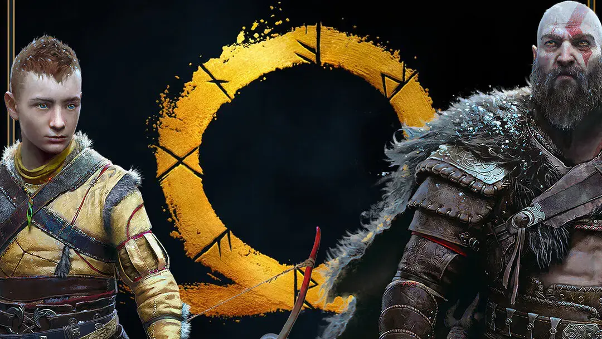
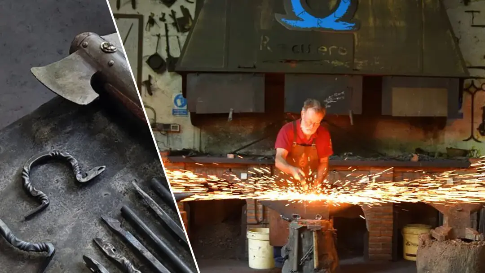
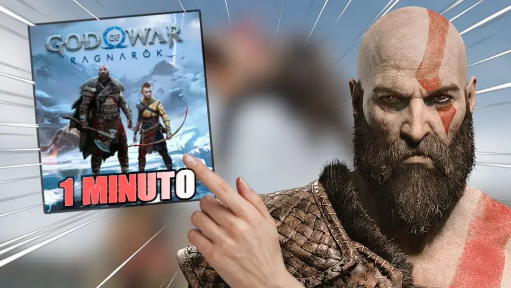
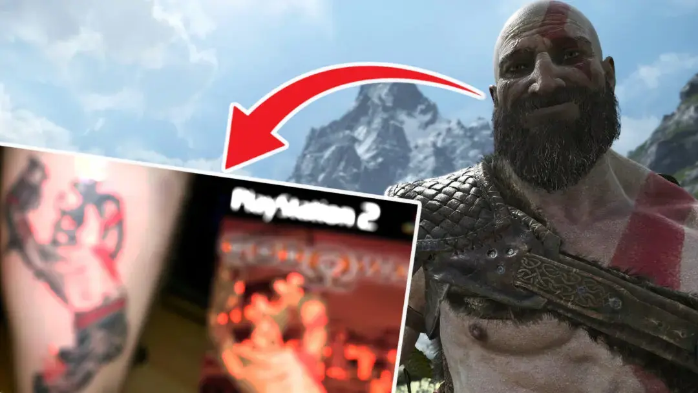
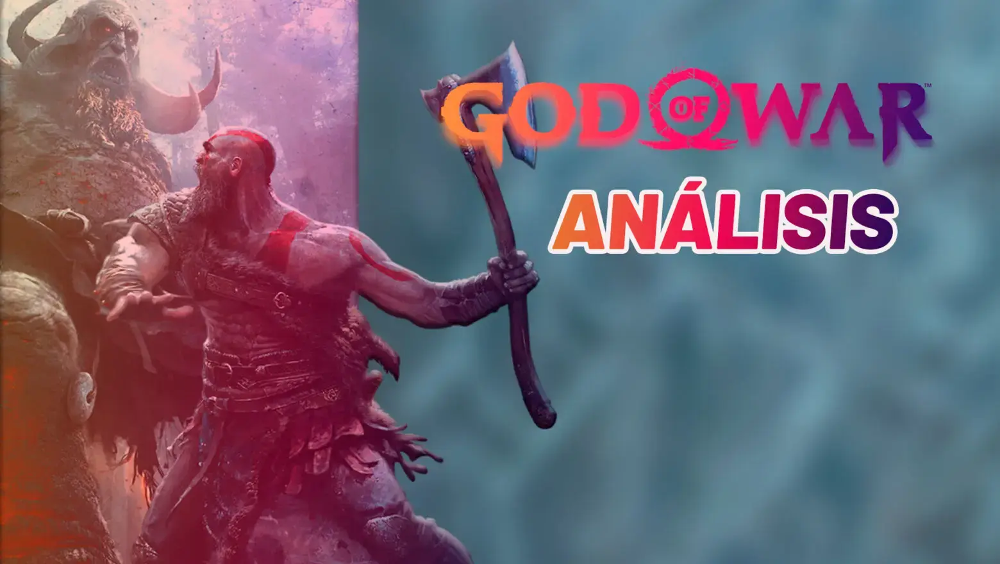
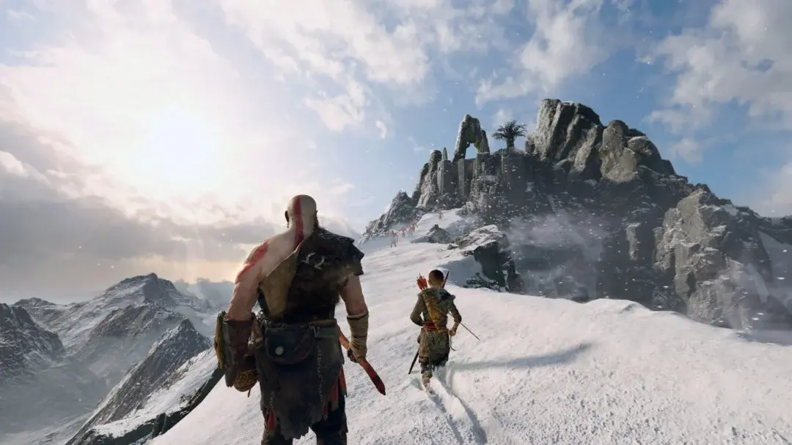
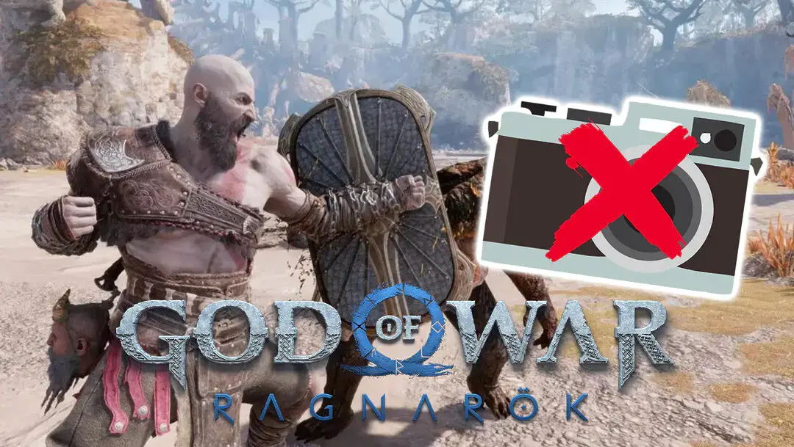

Noticias
¡Últimas novedades!
Aquí encontrarás todas las noticias y las últimas novedades sobre GOW. En FutureGames recopilamos cada día y minuto a minuto toda la actualidad del universo de los dioses favorito de todos y sus plataformas para que siempre estés al corriente de la última actualización o contenido relacionado a tú título preferido, de las fechas de lanzamiento de los juegos más esperados, y los anuncios más importantes.

Impresiones God of War Ragnarök: ¿Camino al mejor juego de la saga?

Anunciado un pack de PS5 con God of War: Ragnarök, disponible el 9 de noviembre

Ni un retraso más: God of War: Ragnarök afianza su lanzamiento tras convertirse en Gold

God of War: Ragnarök: PlayStation forja la fíbula del hacha de Kratos, ¡y tú puedes obtener una réplica!

¿Por qué deberías comprar sí o sí God of War: Ragnarök? Te lo cuento en 1 minuto

El lamentable tatuaje de God of War que no me haría ni aunque me pagaran

Análisis God of War 2018

Sony Santa Monica apunta a un posible God of War 2 con un nuevo puesto de trabajo

God of War: Ragnarök NO contará con Modo Foto el día de su lanzamiento.